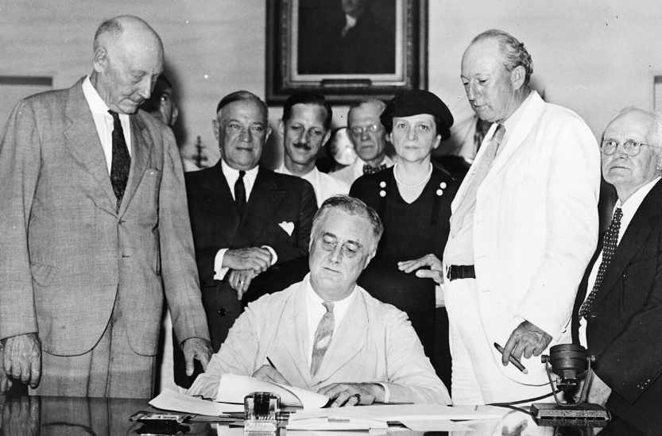
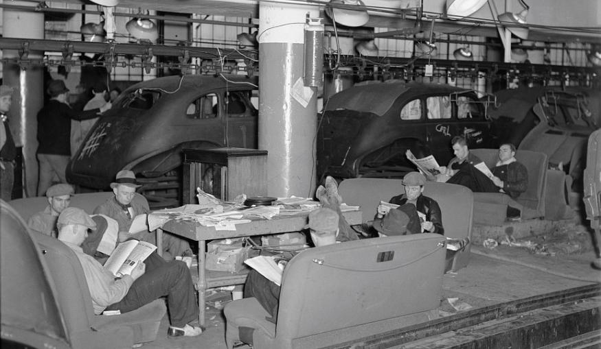
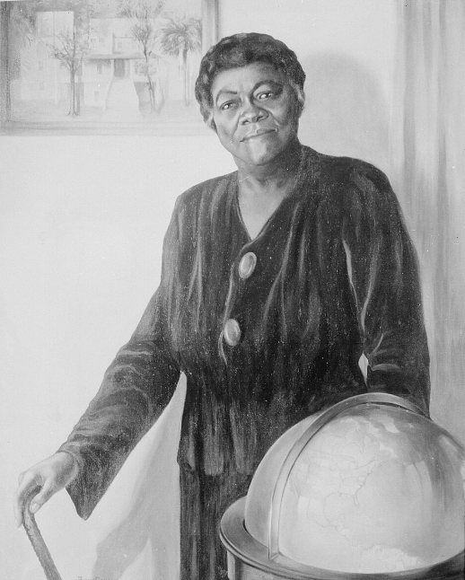
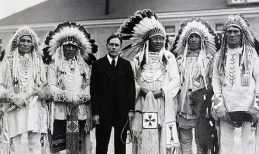
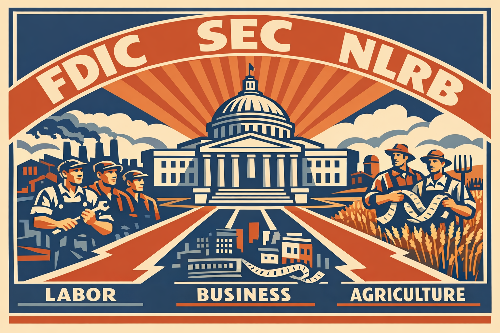

Core Objectives
- Analyze the long-term significance of the Social Security Act in establishing a federal safety net for the elderly and disabled.
- Trace the rise of organized labor under the Wagner Act and the formation of the Congress of Industrial Organizations (CIO).
- Synthesize the components of the "New Deal Coalition" (labor unions, minorities, urbanites, Southern whites) and how it dominated politics for decades.
Key Terms
Social Security Act | Wagner Act (National Labor Relations Act) | CIO (Congress of Industrial Organizations) | John L. Lewis | Frances Perkins | Fair Labor Standards Act | New Deal Coalition | Mary McLeod Bethune | The Black Cabinet | Indian Reorganization Act of 1934 | Welfare State
The Birth of the Welfare State
By 1935, the initial "emergency" phase of the New Deal—often referred to as the First New Deal—had successfully halted the immediate freefall of the American financial system. The bank holiday had restored faith in the credit markets, and early agencies like the CCC had provided a psychological boost to the nation’s youth. However, the Great Depression remained a grueling reality. Unemployment hovered at stubbornly high levels, and the structural causes of economic insecurity remained unaddressed. Franklin D. Roosevelt and his advisors realized that the American people did not just need temporary relief; they needed a permanent foundation for economic stability that could withstand the inevitable cycles of the market. This realization ushered in the Second New Deal, a period of legislative intensity that sought to provide long-term security. The centerpiece of this transformation was the Social Security Act of 1935. This law represented one of the most fundamental shifts in American political philosophy in the history of the republic. For the first time, the federal government accepted a permanent, legal responsibility for the financial well-being of its citizens, effectively creating the modern American Welfare State.

Analysis Question: Why did the Social Security Act become one of the most important long-term legacies of the New Deal in redefining what Americans expected from their government?
The creation of a Welfare State marked the end of an era in which the individual was solely responsible for their own survival regardless of external economic shocks. Before 1935, an American who became too old to work or too sick to labor was entirely dependent on their family’s savings, which were often nonexistent, or the meager, often humiliating resources of local private charities. The Social Security Act replaced this uncertainty with a federally managed "safety net." The program was designed as a three-pillar system of insurance. The first and most famous pillar was an old-age insurance system for retirees aged 65 or older and their spouses. This was a contributory system; workers and their employers paid into a federal fund through a payroll tax. Roosevelt specifically designed the funding this way so that workers would feel they had an "earned right" to their benefits, making it nearly impossible for future politicians to take the program away. He famously remarked that "we put those payroll contributions there so as to give the contributors a legal, moral, and political right to collect their pensions and their unemployment benefits. With those taxes in there, no damn politician can ever scrap my social security program."
The second pillar of the act established a national unemployment compensation system. This provided a temporary financial cushion for workers who were laid off through no fault of their own. It was funded by a federal tax on employers but administered at the state level, ensuring that the "breadlines" of the early 1930s would not be repeated every time the economy slowed down. The third pillar offered federal aid to families with dependent children and the disabled. By providing these forms of assistance, the government signaled a new social contract: in exchange for their contributions and labor, citizens were guaranteed a basic level of security from the "cradle to the grave." While the initial payments were quite modest and the act originally excluded many workers, such as farmers and domestic servants, the precedent was revolutionary. The government was no longer just a distant referee of the economy; it was now a protector of the people’s daily lives.
The long-term significance of the Social Security Act was as much psychological as it was economic. It provided elderly Americans with a sense of dignity and independence that had been previously unavailable to the working class. It also fundamentally changed the American family structure, as children were no longer the sole financial support for their aging parents. However, the initial exclusions of the act were a significant source of tension. To secure the votes of powerful Southern Democrats, Roosevelt agreed to exclude domestic and agricultural laborers—occupations held by a disproportionate number of African Americans and women. This meant that the very people who needed the safety net the most were often the last to be covered by it. Despite these early failures of inclusion, the Social Security Act became the bedrock of the American social contract, establishing the principle that in a modern industrial society, the government has a moral and legal duty to protect its citizens from the ravages of poverty.
Checkpoint 1
1. What was the primary economic rationale for establishing a national unemployment compensation system?
The Legal Revolution of Labor
While Social Security addressed the needs of those out of the workforce, the New Deal also sought to transform the lives of those still in the factory and the shop. Throughout the 1920s, the American labor movement had been in a state of terminal decline. Employers utilized "yellow-dog contracts"—agreements that forced workers to pledge not to join a union as a condition of employment—and the courts consistently issued injunctions to halt strikes. Roosevelt, however, viewed a strong labor movement as essential to the health of the capitalist system. He believed that if workers had more bargaining power, they could secure higher wages, which would then fuel economic recovery through increased consumer demand. This vision was realized in 1935 with the passage of the National Labor Relations Act, better known as the Wagner Act.
The Wagner Act was a landmark piece of legislation that essentially served as a "Bill of Rights" for American labor. It established the federal government as the ultimate arbiter in industrial disputes, and it prohibited a series of "unfair labor practices" by employers. Under the act, it became illegal for a company to fire a worker for union activity, to threaten employees who wanted to organize, or to interfere with the formation of a labor organization. Most significantly, the act created the National Labor Relations Board (NLRB), an independent federal agency with the power to conduct secret-ballot elections among workers to determine if they wanted a union to represent them. If a majority voted for a union, the employer was legally required to bargain in good faith. This shifted the power dynamic in the American workplace from one of absolute management whim to one of legal negotiation.

Analysis Question: How did the Wagner Act and the creation of the NLRB help make victories like the Flint Sit-Down Strike possible, and what were the broader consequences for industrial workers?
This legal empowerment led to a historic explosion in union membership and the rise of a more aggressive type of labor organization. Historically, the American Federation of Labor (AFL) had been composed of "craft unions," which organized workers based on their specific skills, such as plumbers, electricians, or carpenters. This approach often left the millions of unskilled workers in mass-production industries—like steel, automobiles, and rubber—without any representation. In response, John L. Lewis, the charismatic and bushy-browed leader of the United Mine Workers, joined with other labor leaders to form the Committee for Industrial Organization. After a bitter internal struggle with the AFL leadership, this group broke away and became the CIO (Congress of Industrial Organizations). The CIO sought to organize entire industries regardless of skill level, a strategy known as industrial unionism.
The CIO utilized new and highly effective tactics to achieve its goals, most notably the "sit-down strike." In December 1936, workers at the General Motors plant in Flint, Michigan, refused to leave the factory. They simply sat down at their machines and stayed there, preventing the company from bringing in "scabs," or strikebreakers, to take their places. While the company tried to cut off their heat and water, and the police attempted to storm the plant, the workers remained for 44 days. Eventually, General Motors was forced to recognize the United Auto Workers (UAW) as the sole bargaining agent for its employees. This victory triggered a wave of similar successes across the nation. By 1938, the federal government further cemented these gains by passing the Fair Labor Standards Act, which established a national minimum wage, a maximum 44-hour workweek, and outlawed child labor in many industries. For the first time, the "working class" was being legally transformed into a "middle class," with the federal government ensuring they received a fairer share of the nation's wealth.
Checkpoint 2
1. How did the Wagner Act fundamentally alter the power dynamic between factory workers and management?
The New Deal Coalition and Political Realignment
The economic and social shifts of the 1930s led to a profound and lasting realignment of American politics. Franklin Roosevelt did more than just pass laws; he forged a new political majority that would dominate the United States for the next forty years. This alliance, known as the New Deal Coalition, brought together a diverse and often unlikely group of voters who found common ground in their support for the activist government of the 1930s. The coalition was anchored by urban workers, labor unions, various ethnic groups (particularly Catholics and Jews), and Southern whites. Perhaps most significantly, the New Deal oversaw a historic shift in the voting patterns of African Americans.
Since the era of Reconstruction, African Americans had remained loyal to the "Party of Lincoln," the Republicans. However, the Great Depression hit Black communities with twice the intensity of white communities, and the relief programs of the New Deal, despite their flaws and the persistence of segregation, became a vital lifeline. Millions of African Americans felt that for the first time in their lives, the federal government was paying attention to their needs. By the election of 1936, the vast majority of Black voters had switched their allegiance to the Democratic Party. This political realignment was not just about the economy; it was also about representation and the rhetoric of inclusion that emanated from the White House.

Analysis Question: How did Mary McLeod Bethune’s role in the New Deal administration reflect the broader political realignment taking place among African American voters in the 1930s?
This coalition was not without its internal tensions. Southern whites, who had been the backbone of the Democratic Party since the 1800s, often clashed with the more progressive urban and labor wings of the party. Roosevelt was a master at navigating these tensions, carefully balancing the needs of his diverse supporters. He was often criticized by civil rights leaders for failing to support an anti-lynching bill or for allowing the poll tax to continue in the South—compromises he made to avoid losing the support of powerful Southern committee chairmen in Congress. Despite these contradictions, the New Deal Coalition proved to be an incredibly resilient force, as it gave millions of Americans a sense of direct stake in the success of the federal government and the presidency.
The coalition also drew strength from the visible inclusion of previously marginalized groups in the halls of power. Under the influence of Eleanor Roosevelt, who served as the administration’s conscience on social issues, the President appointed more than 100 African Americans to secondary positions in the federal government. This informal group of advisors became known as The Black Cabinet. They worked behind the scenes to ensure that New Deal agencies provided at least some level of fair treatment to Black citizens and to push for greater inclusion in job training programs. One of the most prominent and influential members of this group was Mary McLeod Bethune, a legendary educator who served as the director of the Office of Minority Affairs in the National Youth Administration. Her leadership and her close friendship with Eleanor Roosevelt provided a powerful example of the "new" Democratic Party’s commitment to a more inclusive republic, even as the nation continued to struggle with the deep-seated reality of segregation.
Checkpoint 3
1. How did the New Deal's economic relief programs influence the voting patterns of African Americans?
A New Relationship with the Land and Native Peoples
The transformative power of the New Deal also reached into the most remote regions of the American West, altering the lives of Native Americans and the management of the nation’s natural resources. For decades prior to the 1930s, the federal government’s policy toward Native Americans had been defined by the Dawes Act of 1887, which sought to "civilize" Native peoples by breaking up tribal lands into individual plots and forcing them to assimilate into white culture. This policy had been an unmitigated disaster, leading to the loss of over 90 million acres of tribal land and the destruction of traditional social and cultural structures. Under the New Deal, this approach was radically reversed by John Collier, the Commissioner of Indian Affairs, through the Indian Reorganization Act of 1934.

Analysis Question: How did the Indian Reorganization Act differ from the earlier Dawes Act in its assumptions about land, citizenship, and Native self-government?
This "Indian New Deal" marked a significant shift from forced assimilation toward tribal autonomy. The act ended the further allotment of tribal lands to individuals and returned "surplus" lands to tribal ownership. Most importantly, it provided federal funds for tribes to purchase additional land and authorized them to establish their own tribal governments and businesses. While the act was controversial—some Native Americans feared it was just another attempt by the government to control their lives, while others felt it didn't go far enough—it represented a major recognition of tribal sovereignty and the inherent value of Native cultures. It provided the legal framework that many tribes still use today to manage their resources and govern their people, signaling that the federal government’s responsibility now included the protection of cultural diversity.
Simultaneously, the New Deal introduced a new level of federal management of the American landscape. Projects like the Tennessee Valley Authority (TVA) and the Central Valley Project in California used the power of the federal government to transform entire regions. By building massive dams, the government controlled floods, improved navigation, and brought electricity to rural areas that had been left in the dark by private utility companies. These projects were not just about infrastructure; they were about the idea that the government could use science and technology to "plan" a more prosperous and equitable society. This era saw the birth of the idea that the nation’s natural resources—its rivers, its soil, and its forests—were a public trust that the federal government was obligated to manage for the benefit of all citizens.
The environmental legacy of the New Deal was also seen in the response to the Dust Bowl. The Soil Conservation Service was established to teach farmers how to protect their land through contour plowing and crop rotation. The government also oversaw the planting of millions of trees to create "shelterbelts" that would act as windbreaks across the Great Plains. These efforts were based on the realization that the "rugged individualism" of the past had led to an ecological catastrophe, and that the long-term health of the nation’s land required a centralized, scientific approach to management. By the end of the 1930s, the American landscape had been physically reshaped by the federal government, mirroring the way the American government had been reshaped by the New Deal.
Checkpoint 4
1. How did the Indian Reorganization Act of 1934 represent a reversal of previous federal Native American policy?
The Legacy of the Changed Republic
By the late 1930s, the United States had emerged from the crucible of the Great Depression as a fundamentally different nation. The New Deal had not ended the economic crisis—unemployment would remain high until the massive military mobilization for World War II—but it had successfully prevented the total collapse of the American democratic system. At a time when other nations were turning to the "easy answers" of fascism or communism, the New Deal proved that a liberal democracy could adapt to an industrial age without sacrificing its core values. The republic was no longer a collection of isolated individuals and states; it was a highly organized society where the federal government served as the "broker" of the common good.

The New Deal transformed the federal government into a "Broker State," fundamentally shifting its role to mediate between the competing interests of labor, business, and agriculture. By establishing permanent regulatory agencies, the government assumed direct responsibility for the stability of the economy, ensuring that the rules of commerce and finance were supervised by federal experts rather than dictated by unregulated market forces.
Analysis Question: How did the transition to a "Broker State" alter the traditional balance of power between private business interests and the working class?
The most significant legacy of this era was the permanent expansion of the federal government’s reach. The "alphabet soup" of agencies established the principle that the government is responsible for the health of the economy and the security of its people. This shift created what historians call the "Broker State," where the government acts as a mediator between the competing interests of labor, business, and agriculture. The creation of the FDIC, the SEC, and the NLRB ensured that the "rules of the game" in the American economy would be supervised by federal experts, rather than left to the whims of unregulated markets. While this expansion of power led to decades of debate over the proper size of government, it also provided the stability that allowed for the unprecedented economic growth of the post-war era.
Perhaps the deepest change was psychological. Americans now expected their government to be active, empathetic, and involved. The image of the president as a distant figure was replaced by the "Fireside Chat" and the "New Deal" program. This shift in expectations was personified by leaders like Frances Perkins, the first female cabinet member, whose work as Secretary of Labor was instrumental in crafting the Social Security Act and the Fair Labor Standards Act. Her career demonstrated that the government could be a force for moral progress as well as economic management. Even as the specific agencies of the 1930s were eventually phased out or replaced, the concept of a "living Constitution" that can expand to meet the needs of the people became the bedrock of modern American civic life.
Ultimately, the New Deal did not solve every problem. It did not end racial segregation, it did not achieve full economic equality, and it did not eliminate poverty. However, it provided the tools and the political framework that future generations would use to fight for those goals. It established the principle that in a democracy, the government belongs to the people, and that its primary purpose is to ensure that everyone has a fair chance to succeed. The republic had been tested by the greatest failure of the capitalist system, and it had responded by reinventing itself as a nation that sought to provide "a more perfect union" not just in the halls of justice, but at the kitchen table of every American family. This transformation remains the defining feature of modern American life.
Checkpoint 5
1. How did the New Deal alter the psychological expectations Americans had of their federal government?
Individuals & Leadership: Agents of Change
Frances Perkins: The Woman Behind the Safety Net
The Path to Power
Frances Perkins did not arrive in Washington as a career politician. Her life as a reformer began in the tenements and factories of New York City. The defining moment of her life occurred in 1911, when she witnessed the horrific Triangle Shirtwaist Factory fire. Watching young women jump to their deaths because factory doors were locked convinced her that an "unregulated" market was a threat to human life. She spent the next two decades fighting for industrial safety and labor laws in New York, eventually serving as the state’s industrial commissioner under Governor Franklin Roosevelt. When FDR was elected president, he chose her as his Secretary of Labor, making her the first woman in American history to serve in a presidential cabinet.
Architect of the New Deal
Perkins’s influence on the New Deal was profound. Before she accepted the cabinet position, she presented Roosevelt with a list of policy goals that she insisted must be pursued: a 40-hour workweek, a minimum wage, worker’s compensation, and—most importantly—a permanent system of old-age and unemployment insurance. Roosevelt agreed, and Perkins became the primary architect of the legislation that defined the modern safety net. She chaired the Committee on Economic Security, which drafted the Social Security Act of 1935. She was a master of the legislative process, working tirelessly to convince skeptical congressmen and business leaders that social insurance was a common-sense necessity for a modern industrial nation.
Challenges and Identity
Perkins faced immense obstacles as a woman in a male-dominated political world. Male labor leaders often resented being told what to do by a woman they viewed as a "social worker," and her political enemies frequently tried to label her as a radical or a communist. To navigate these challenges, she adopted a conservative, "motherly" public persona, often wearing simple tricorn hats and avoiding the flashy style of the era. Behind this persona, however, was a brilliant and determined leader who understood that for the New Deal to last, it had to be built on solid, defensible legal ground.
Historical Significance
The work of Frances Perkins is visible in the lives of almost every American today. Every time a worker receives a minimum-wage paycheck, utilizes worker’s compensation after an injury, or receives a Social Security check in retirement, they are experiencing the legacy of the woman who believed that the government’s highest calling was the protection of its people. She proved that a woman could lead a major federal department during a national crisis, and she transformed the Department of Labor from a minor agency into the engine of the American welfare state.
Perspective Questions
1. Analyze the Imagery: Why did Frances Perkins choose to witness the Triangle Shirtwaist Fire as the "founding moment" of her political career? How did this specific choice of imagery help her frame labor reform as a moral necessity rather than just an economic policy?
2. Compare Viewpoints: Contrast the reaction of a male union leader in the 1930s to the appointment of Frances Perkins with the reaction of a woman working in a textile mill. How do these differing perspectives explain the social barriers Perkins had to overcome to implement her programs?
3. Evaluate Strategy: Why was Perkins’s decision to focus on "social insurance" (Social Security) more effective as a long-term strategy than simply asking for more direct relief payments? Consider the role of political sustainability and the idea of "earned" benefits.
Vocabulary Activity
Instructions: Read the following historical narrative. Fill in the blanks using the terms provided in the word bank below. Each term will be used exactly once.
Forging a New America
The sweeping reforms of the 1930s permanently altered the relationship between the federal government and its citizens. A major shift occurred with the birth of the modern , as the government accepted responsibility for providing a basic economic safety net for the vulnerable. The chief architect of much of this legislation was , the Secretary of Labor and the first female cabinet member in U.S. history. She played a pivotal role in drafting the monumental of 1935, which established a federal system of old-age pensions and unemployment insurance.
Industrial workers also experienced a legal revolution during this era. The passage of the effectively served as a "Bill of Rights" for labor, legally protecting the right of workers to organize and form unions without employer interference. Empowered by these new protections, charismatic labor leaders like pushed for the aggressive unionization of unskilled workers in mass-production industries. This effort led to the creation of the , a labor organization that successfully used tactics like the sit-down strike to win recognition from massive corporations. The federal government further solidified the "middle class" status of these workers by passing the , which established a national minimum wage and outlawed child labor.
Politically, President Franklin D. Roosevelt forged the , a diverse political alliance of urban workers, labor unions, Southern whites, and minorities that dominated American politics for decades. As African Americans shifted their voting allegiance to the Democratic Party, an informal group of minority advisors known as worked behind the scenes to ensure New Deal agencies treated Black citizens fairly. A highly influential member of this group was the renowned educator , who directed the Office of Minority Affairs. The transformative reach of the New Deal also extended to Native American communities; the passage of the finally ended the disastrous Dawes Act policies of forced assimilation and restored tribal sovereignty and communal land ownership.